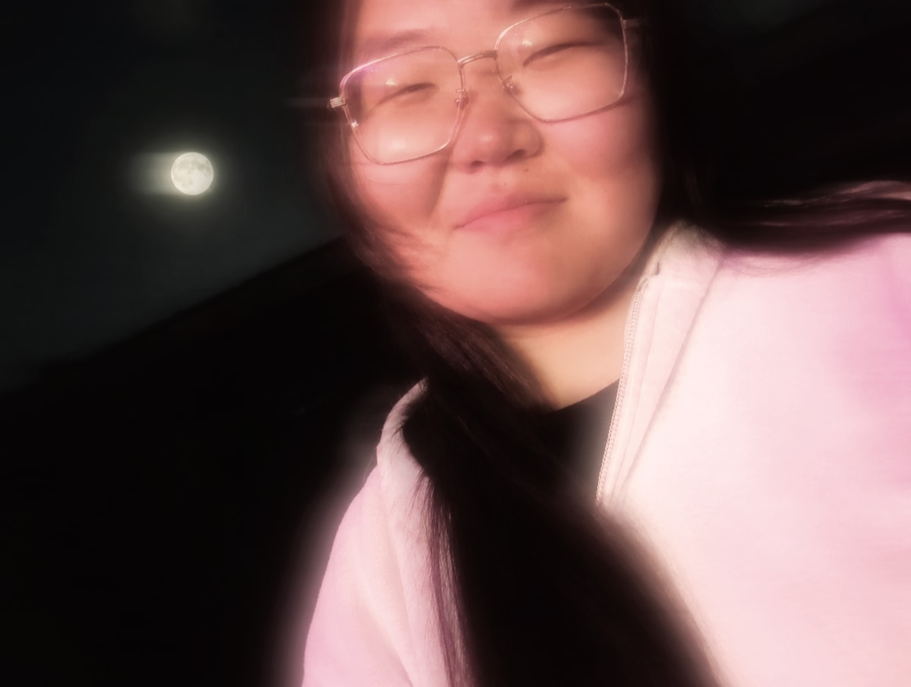

🎬 Фанерное солнце
История о повзрослевших героях детства.
Видеомонтажёр · фан-ролики по «Аватару»

Я, Цыренжапова Номина Аюровна, студент 3-го курса колледжа БГУ, обучаюсь на специальности «Информационные системы и программирование». Занимаюсь видеомонтажом: собираю ролики, работаю со звуком, цветокоррекцией и титрами.
Люблю делать короткие ролики на разные темы, которые удерживают внимание зрителя с первой секунды, в основном про вселенную Аватара.
Все ролики взяты из моего TikTok-аккаунта.
История о повзрослевших героях детства.
Трагедия, показанная в фильме про Аанга.
Противостояние между братом и сестрой.
Путь повзрослевшего Зуко из фильма об Аанге.